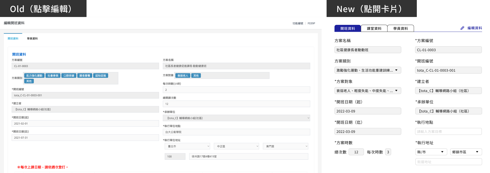
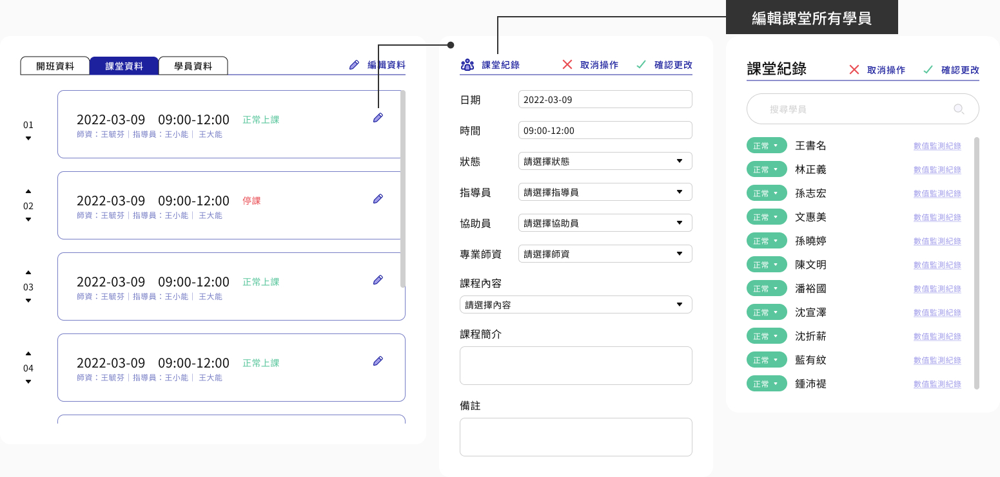

協助社區單位及地方政府有效運用資通訊技術，以利管理長者健康資訊，並透過平台下載長者容易理解的個人報告，進而增加對健康自主管理與長者健康促進單位活動的信心。 提供社區單位、縣市政府與國健署，符合長者健康管理與預防及延緩失能網絡需求之網站與系統。 此次優化平台功能包含師資管理、使用者權限類別與成效統計。
使用者
◼ 國健署社區組
◼ 各地方衛生局
◼ 國民健康署預防及延緩失能整合計畫子計畫二工工作分項二之社區單位
資訊架構

舊版本使用者痛點
依據客服人員回報統計數據，發現各單位使用上常發生以下問題：
資訊狀況
提示語少，需要與客服確認如何登打才不會使資料上傳失敗。
資料登打
系統將課程不同天的資料分開必須要回到上一頁再往下看，導致登打資料時非常耗時間。
不確定因素
開課期間有些長者只來第一次，或者前十次都有到，僅兩次未出席，也因此沒後測，該如何記錄？
介面重構
平台主要功能為管理“人”以及其資料，最上層資料顯示介面上改採用卡片形式。
使用卡片形式有以下原因：
1. 減少使用者鼠標移動距離，讓操作速度變快
2. 將多餘資訊藏至卡片中，避免登打人員眼花
3. 使每一筆資料都具有獨立性
以課程管理為例，下為上層資料顯示：
下圖為內層基本資料顯示，改用右側標籤方式，以內層多選下拉選單減少多選元件的空間：
重新切分資訊區塊解決原先流程上無法在同一視窗登打改變狀態問題， 也可以在每一頁都連結到登打前後測的區域，防止有其中幾堂無法到課的學員沒有登打到資料，導致數值平均不準確：
簡化學員報到方式
系統以電子郵件註冊，舊版平台長者在報到時需要登打相關帳戶資料花費較多時間，新系統自動化報到流程如下：
下一步
第二版預計於2022年6月中期開放各單位測試使用，測試將著重驗證登打資料以及查找資料的情形是否有改善、設計是否更簡單直覺，並持續進行優化。上層資訊介面方面，未來將會評估資訊區塊不用分頁改無限滾動方式是否能讓體驗更順暢。
另外預計與Line Bot連動讓學員得以實時追蹤課堂通知。